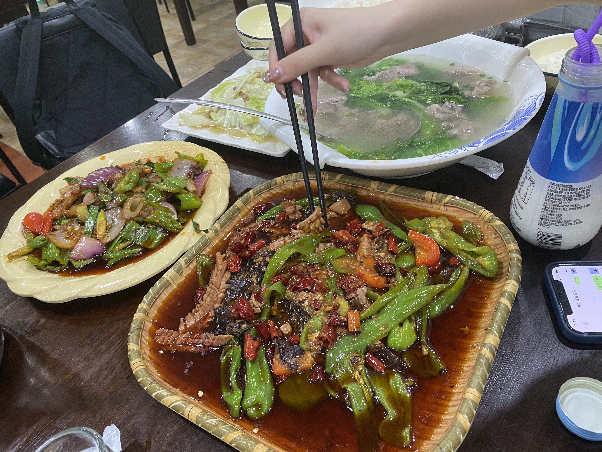
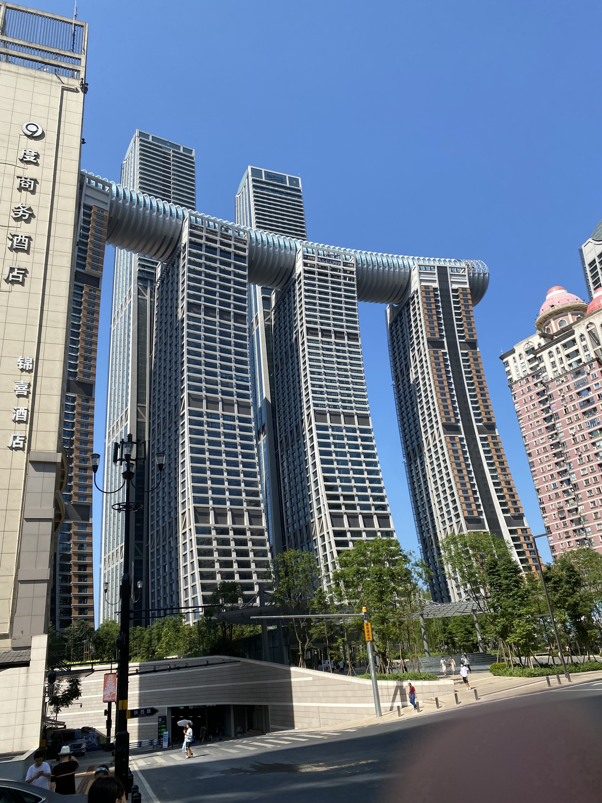
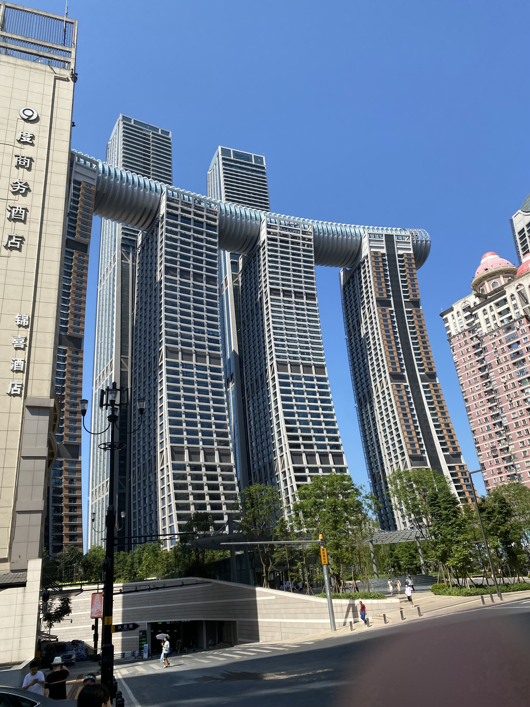

Spicy Food
After the lesson in Chengdu, in Chongqing resturant, we told waitress
that we are not native people, and that's why our dish is not covered
completely by hot pepper. With moderate spicy taste, , we enjoy
Chongqing food much more than Sichuan food. In fact, Chonqing food
supposed to be much spicy than Sichuan food for that they would prefer
use hot pepper directly instead of hot oil which is prefered by
Sichuan people.

Building
The building and landform of Chonqing can be described as unique. As a
city scatters in a moutain, it is a usual scenario that walking down a
stree and encounter a cliff. To accomodate this special landform, the
building in Chonqing is also a unique sight. For the left graph, you
can see a bridge shuttle among skysscrapers for transportation. For
the right graph, it's four huge building built on at the confluence of
the Yangtze and Jialing Rivers in the Peninsula of Yuzhong District in
Chongqing.
 
